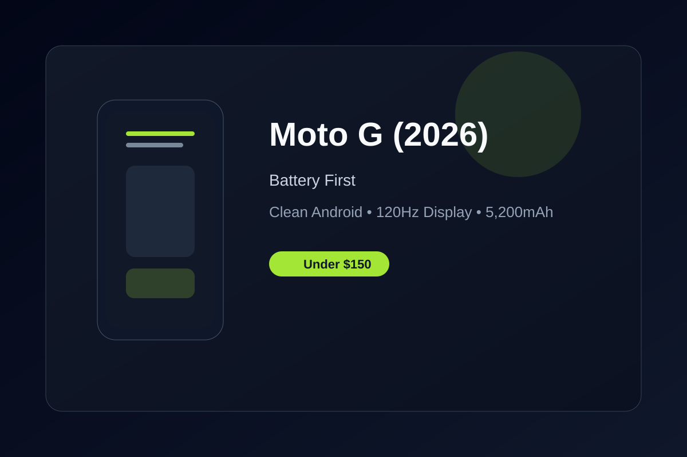

Moto G (2026) Review: Solid Battery and Clean Android Under $150
In an entry-level market flooded with trade-offs, the Moto G (2026) delivers a massive battery, smooth 120Hz display, and clean software.
In an entry-level smartphone market flooded with compromises, the Moto G (2026) stands out by focusing on core essentials. Retailing around $130 to $140, it gives buyers a refreshed, dependable Android experience without the clutter and price creep of premium devices.
The defining highlight is its massive 5,200mAh battery. Combined with the power-efficient chipset and a clean software stack, this phone is built for all-day use and often stretches beyond a full day on just one charge. For commuters, students, and light-power users, that kind of stamina is the real value proposition.
The 6.7-inch 120Hz display adds fluidity to everyday browsing and app navigation. It feels more premium than the price suggests, and the overall UI remains smooth thanks to Motorola's minimalist Android implementation. Software updates and a relatively clean app footprint also help the phone avoid the bloat that often shows up in budget devices.
While the camera system is not revolutionary, it remains solid for casual shots in good light. For a device in this range, what matters most is that it is dependable, easy to carry, and competent enough for social media, streaming, and communication. The phone feels balanced in a way many budget alternatives do not.
If you need an affordable 5G daily driver that lasts more than a day, stays responsive, and avoids the typical cluttered Android experience, the Moto G (2026) earns its place near the top of the sub-$150 conversation.
Key Takeaways
- Price Range: ~$130 – $140 (Amazon Unlocked)
- Display & Audio: 6.7-inch HD+ 120Hz LCD with capable stereo sound
- Battery: 5,200mAh with 30W fast charging
- Cameras: 50MP main sensor and upgraded 32MP selfie camera